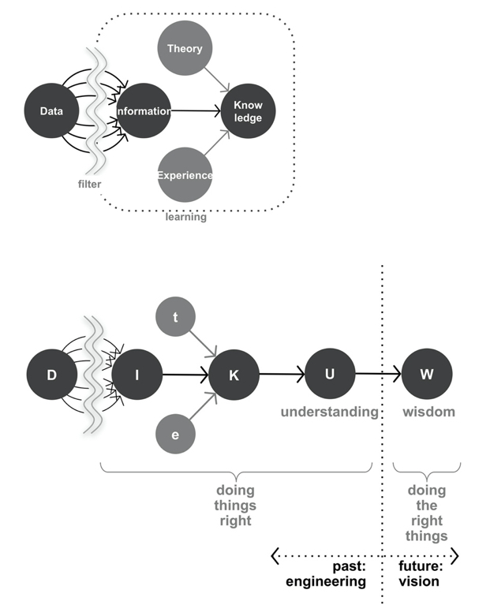

Jan 28, 2021 - 5 minutes to read - PDF version
Technology and Data in Urban Design and Urban Management
 By Langdon Morris
By Langdon Morris
During the last two decades, technology has emerged as one of the central drivers of the global economy, as well as a key aspect of our social lives and lifestyles. And now it is becoming an essential element of the urban infrastructure.
It is a principle of all management that “you cannot manage what you do not measure,” and technology is certainly a brilliant tool for measuring the urban metabolism. With the technology of ubiquitous and inexpensive cameras and sensors it is now common to gather data about nearly all facets of a city, data that was for the most part previously unavailable.
But What to Do with All That Data?
Of course, as technology leads to exponentially more data, it also requires more powerful data management and analytic tools to make sense of the otherwise overwhelming quantity of data. Hence, we see a clear progression … from measurement to analysis, and then to action.
As all this can be modeled in advance. It naturally impacts on urban design just as it impacts on urban management, which makes it easy to see how important technology is and will continue to be to the city. For example, urban managers are now learning how to use “digital twins,” computer model simulations of their own cities. Urban designers can henceforth create a digital twin of a prospective city before the real one is built, enabling optimization of every factor in the complex city infrastructure – energy, transportation, water, food, and climate among them.
A Paradigm Shift
Not only has technology led to a massive profusion of data, it’s also enabled development of new data management tools and paradigms. While the goal for technology companies is generally to sell more technology, the goal for urban designers and managers is to make their cities better. This requires the transformation of data into something far more valuable, wisdom. Two of the great business writers of the 20th century, Peter Drucker and Russell Ackoff, articulated a model showing the stages of progressive value from data, transformed into information, and then from information to knowledge. But knowledge is not enough. We need something deeper – understanding – and then something deeper still – wisdom.
- Each step in this progression requires both insight – knowing what to do – and an investment of time and possibly money. But the payoffs are huge – wisdom, after all, tells us what to do to achieve the best outcomes.
- And in this progression, we must recognize that technology is not the end, it’s merely a tool that’s good or even brilliant at the data end of the scale, but progressively less relevant as we move toward wisdom. In fact, the proper role of technology is to enable and enhance wisdom, to provide evidence to support analysis and decision making.

CaptionThe model tells us that Data must be filtered to become useful as Information; and that Information becomes Knowledge only when fused with Experience of how the real world works, and Theory about how it ought to work. Understanding is the capacity to do things right, but Wisdom is the clarity to do the right things, and thus by far the most valuable of all five stages.
The essential questions for technologists are:
- How are the data being collected?
- How are the data being filtered?
- How does the resulting information shape our knowledge?
- What forms of analysis enable us to transform useful knowledge into much more useful understanding and wisdom?
Technology…Don’t Build Your City Without It
In summary with respect to cities, it’s clear that technology has become the essential partner and supporter of the urban infrastructure, and as the 2020s advance, we will surely see progressively more technology doing more monitoring and modeling of the city’s systems for delivery and management of energy, water, transportation, security, and climate. We have to assume, in fact, the technology will be fully embedded in every aspect of the urban infrastructure.
This will lead, as noted above, to unprecedented masses of data, and so getting value from the data becomes the essential task. It thus becomes necessary that when infrastructure technology is designed and installed, there must be in place already a vision for how the data will be transformed into value, the tools and techniques used for filtering, as otherwise the huge investments will be for naught.
Where, then, is the added value? It is precisely in the design of the filters, which are analytic tools and frameworks such as a robust Data Fabric model should provide. As raw wheat is fashioned into flour and then baked as bread, and as iron ore is purified and becomes steel, so must the profusion of data be transformed into something which has meaning, and which informs.